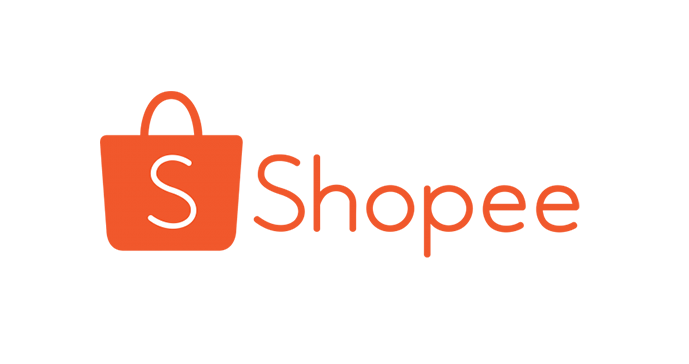

Hello! I am James Chua a BBA Business Analytics student from the National University of Singapore.
I've worked part-time during my studies as a Data Science and Data Analyst Intern over these 2 years. I enjoy my time investigating datasets and uncovering insights where we can understand more about human behaviour. For example, I am currently working on user identification through clickstream data, where we detect duplicate / fraudulent users based on how they surf the site.
In my pastime, I spend time reading history books and learning about languages. I take a Minor in Language Studies while taking technical classes about Natural Language Processing.
My ultimate goal for myself is to be someone who is able to tackle any sort of problem thrown towards me. While I am most experienced in data-related roles, I am open to take on other roles in a startup as well to improve myself. These roles can include but are not limited to: model deployment, business development, marketing and finance.
Jun 19 - Current
Shopee is the leading e-commerce platform in Southeast Asia.
Clickstream data was previously not used for fraud/bot detection in Shopee. I created predictive models for user identifcation, with techniques inspired from NLP. (Word2vec, weighted document similarity based on matrix of ngrams). In the test set of 1 positive: 20 negative pairs, I achieved 0.96 PR-AUC. This allowed us to confirm thousands of duplicate users. I worked with PySpark, SparkSQL, to extract and transform my data for training in tensorflow / sk-learn.
The department also needed a platform for easy visualization of suspicious behaviour. I created a pipeline for automatically parsing pandas dataframes for use in Elasticsearch, speeding up the data visualization process on Kibana.
Jun 17 – Feb 19
SuitYourself Singapore LLP is a garments startup founded by undergraduates in 2016. I joined this startup around 8 months after it started, taking on a variety of roles.
We faced high costs stemming from human error in data entry. I created regression models to predict customer sizes. The predictions were integrated into sales workflow to provide intuitive use, reducing costs by up to 10%.
Previously we manually managed client scheduling, wasting hours everyday. I automated this process, cutting time spent on scheduling by 90%.
I also marketed towards university by organising and speaking in talks and roadshows for the company. I designed collaterals in illustrator, and headed a CSR project in collaboration with the charity arm of the Business School Club of NUS. These projects increased sales towards our target demographic by at least 200%.
I attended to day to day sales, becoming the best salesperson out of the team. This was in terms of average spend per customer and repeat customer rate.
Our success has been rewarded in Straits Times article ‘Young tailors disrupt made-to-measure industry with home visits and technology’.
Sep 2017 - Jan 19
NUS Investment Society is a student-led organisation to educate the public on finance.
I guided a team of Equity research analysts to report on companies in the healthcare sector, educating them on financial modelling techniques, such as a full Discounted Cash Flow model.
I gave seminars on personal investing, as well as writing analyst reports on the healthcare sector with fundamental analysis techniques.
Aug 18 – Jan 19
NUS Bizad Charity Run is a student and alumni initiative that raises funds for those in need.
I spearheaded and managed campaigns on platforms such as Facebook and Instagram, increasing audience engagement that led to a 150% increase in signups during the period.
Created advertising content such as videos and posters, utilizing the Adobe Suite while managaging the wix site of the campaign. The higher quality of the marketing collaterals increased the Instagram follower count by 25% in 3 months
Our campaign successfully raised a record of SGD 250,000 for cerebral palsy students.
Aug 2017 - Jun 2021
Predictive Modelling / Machine learning
BT4222 Mining Web Data for Business Insights: Natural Language Processing. Covered regex, Context Free Grammar, tree parsing, text processing, text normalization, word embeddings via Word2Vec, topic modelling via latent dirichlet allocation, generative text models.
DBA3803 Predictive Analytics in Business: The math behind popular models such as decision Trees, logistic regression, SVMs etc.
GECCELM066 Big Data Analytics (HEC) and Andrew Ng’s deep learning course: Multilayer perceptron, Convolutional Neural Nets, image localisation, facial recognition, YOLO, sequence models.
Descriptive Analytics
DAO2702 Programming for Business Analytics: Statistics, seaborn, pandas and sklearn to create data visualizations and linear regressions.
DBA3702 Descriptive Analytics With R: Using R to create dashboards with shiny for interactive insights, as well as scraping data from the web.
Operations/ Finance
FIN2704 Finance: Valuation through discounted cash flow for bonds, businesses, projects. Peer comparison and portfolio management.
GEM1MSC004 (HEC) Operations and Supply Chain Management: Flow and capacity management, inventory control, and quality assurance.
Dean's list 2018/2019 Semester 1.
GPA: 4.69/5
Feb 2019 - Jun 2019
HEC Paris
Here I continued my study of French while taking my other modules